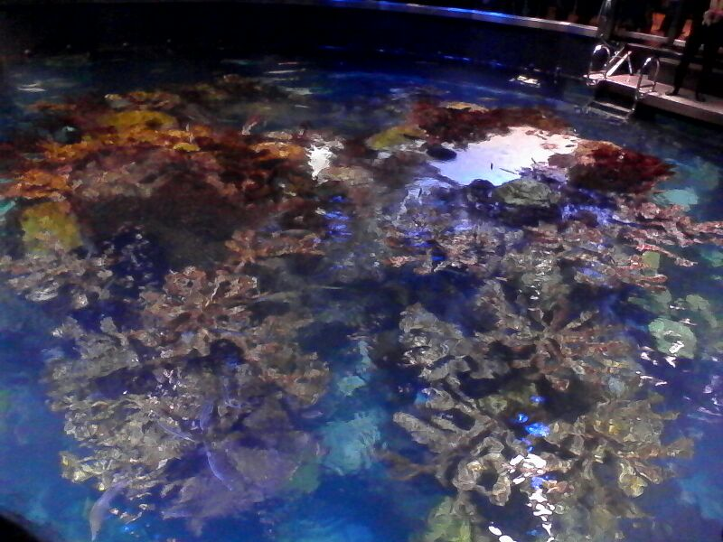
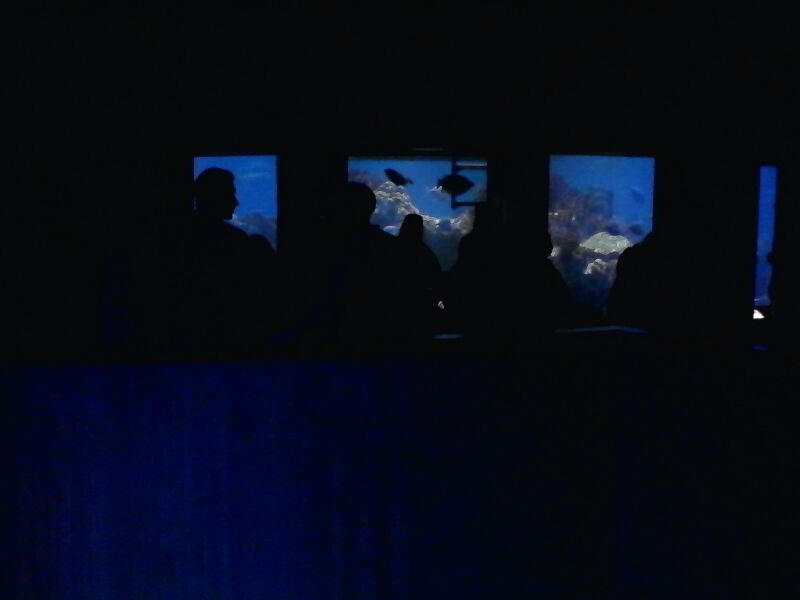
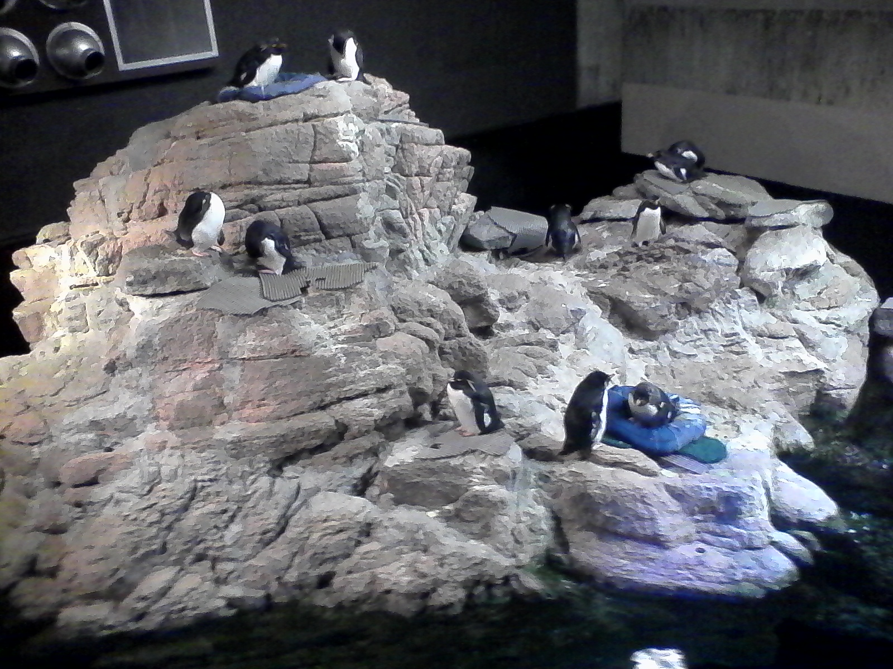
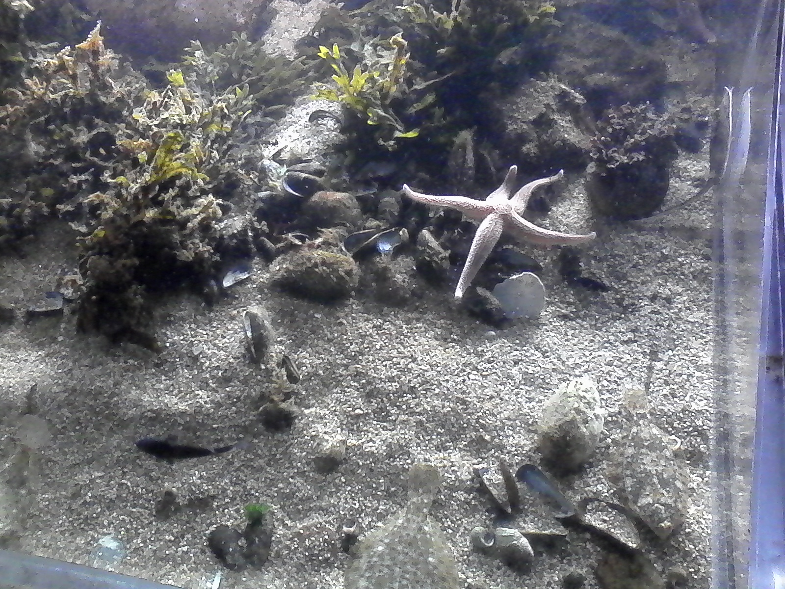
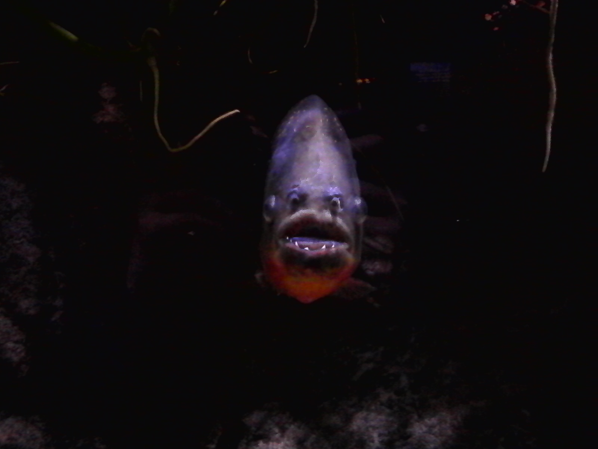
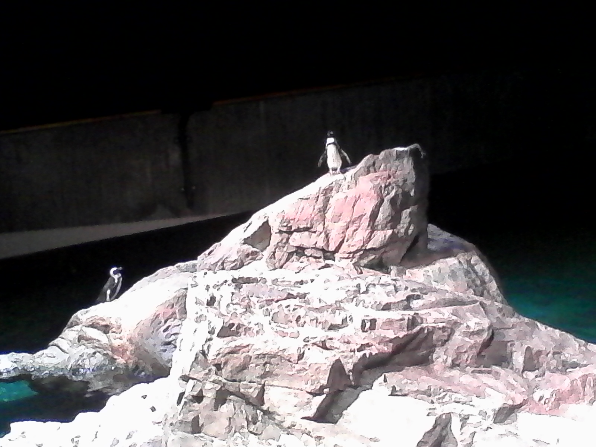
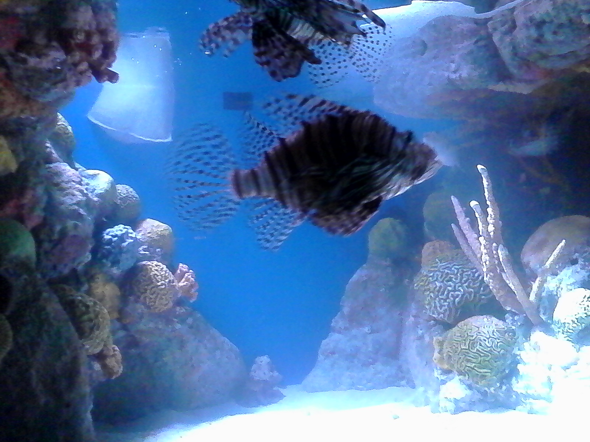
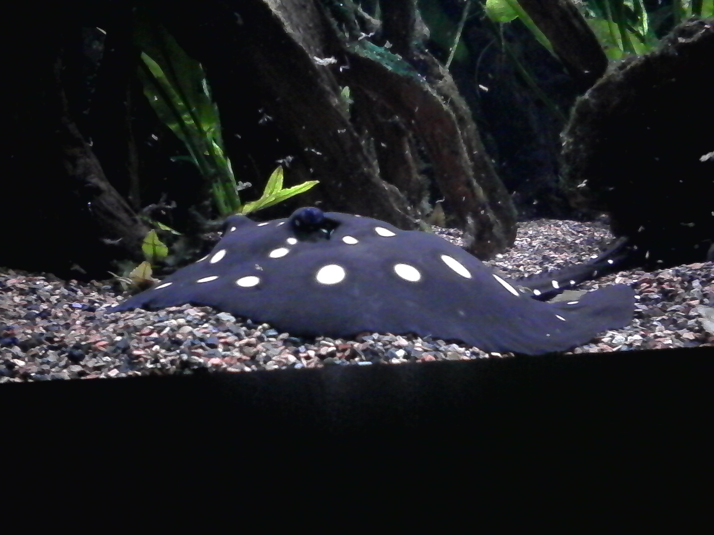
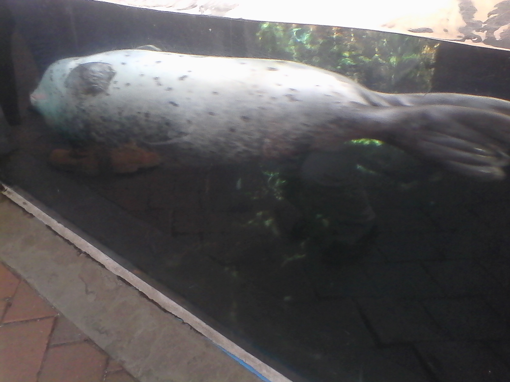
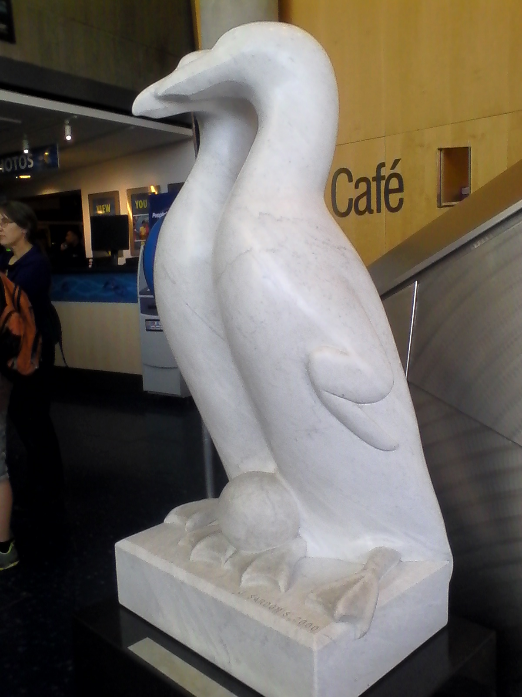

New England Aquarium
My job
I am a Visitor Education Volunteer, or VE, at the New England Aquarium. VEs are the people you see standing around everywhere helping with the touch tank, and giving information on the animals. The aquarium has many many interns, employees, and volunteers. Here, in short, is the process I went through to start work at such a large and complicated organization.
How to become a volunteer/intern at the aquarium
- Fill out their online application at http://www.neaq.org/get_involved/volunteering_and_internships/volunteering/volunteer_application.php . You will get a confirmation email after you submit it.
- After waiting a long time, contact the volunteer coordinator, Noel Keady. He is usually good about responding to emails, but nothing is guarenteed. If you try to reach him by phone, he may or may not be in the office. There may or may not be Anyone in the office. You could be on hold for a while. Be patient. If you reach him, things will go a lot faster.
- If they are interested in you, you may now schedule the first interview. In this particular interview, Noel might be undergoing an assessment of his interviewing skills as well. You'll both be similarly nervous, but don't worry, you'll do just find.
- Your interview and availability will be reviewed with the higher-ups, and at this point if they're still interested in you, they will send you an email to schedule a second interview. This is the last one, I promise.
- You'll come into the same room you had the first interview in, and get a feeling of deja-vu. Just relax, and be yourself. At this point, the second interview is basically a formality. They're getting to know you, and seeing how well you'd fit.
- You will have to commit to one day a week for six months. This will not be enough hours for your school-required internship, so you'll have to make a website about it as well.
- Get trained to do different stations, and start working!
What I learned
Because of the aquarium, I learned what it's like to work at a
Photos
Enjoy some photos I took while at the aquarium.

This is the top of the Giant Ocean Tank. It is home to rays, eels, sea turtles, and many kinds of reef fish. The coral in it is fake. It would take about 5,000 years to grow the amount of coral in the tank.

These are visitors on a crowded Sunday looking through the side windows of the Giant Ocean Tank.

Looking down from the third level, you can see the "Macaroni" penguins.

A starfish moves across the bottom of a tank

A pirahna looks menacingly from the Amazon river tank.

The penguins at NEAQ enjoy a natural rocky habitat. One penguin is playing king of the hill.

Lionfish are highly poisonous, and can be lethal to humans if stung.

A spotted ray skates across the bottom of the tank

The seal tank is located on the outside of the building, and seals enjoy showing off for the guests.

This iconic statue of a penguin couple watching over an egg greets visitors as they walk through the front doors into the lobby.
BACK TO HOMEPAGE